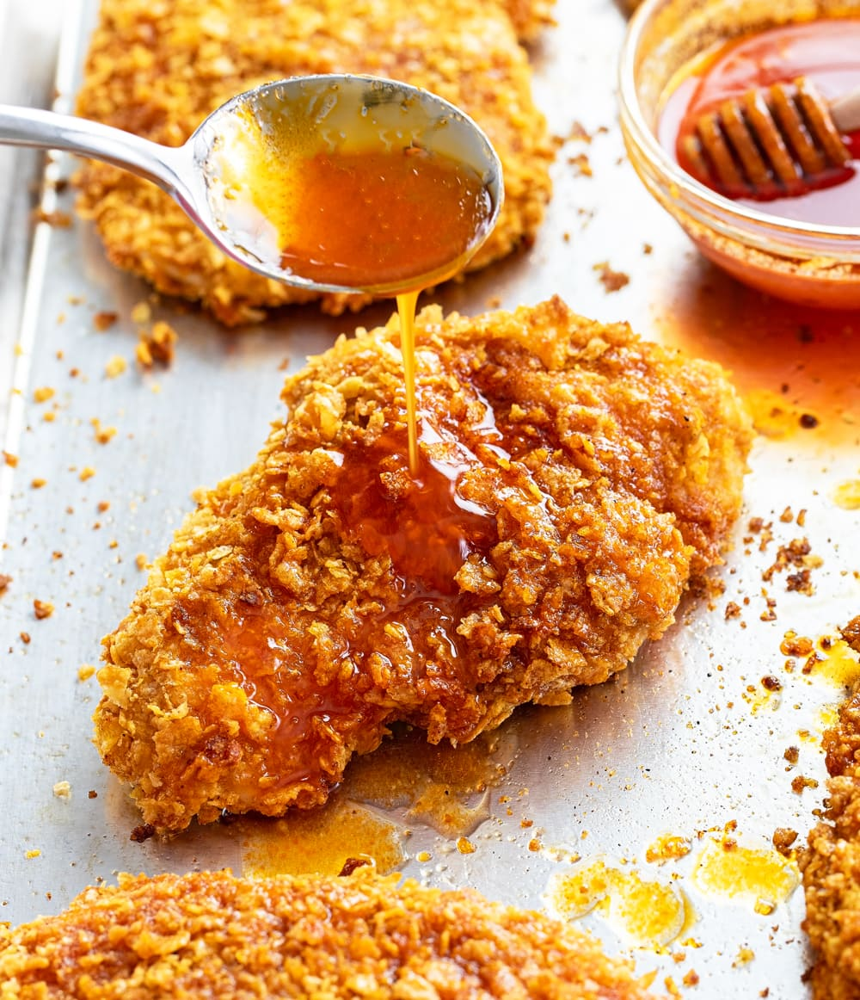

Description
This easy Cheeseburger Soup recipe has savory bacon, cheddar cheese, burger seasonings, and a hint of classic
condiments! You’ve never had a soup like this before!
Ingredients
- 5 strips bacon, 2 tbsp drippings reserved. (Optional, see notes)
- 1 lb. ground beef
- Salt/Pepper
Steps
- Cook bacon and set aside, reserve bacon drippings. Chop bacon once cooled.
- Brown ground beef in the same skillet until cooked through. Remove and set aside. Deglaze the skillet
with
beer (or beef broth), and reduce by half.
- Add reserved bacon drippings and butter. Soften onions, carrots, celery, and garlic. Add the
Worcestershire
sauce, hot sauce, mustard, ketchup, pickle juice, seasonings, and flour. Add the chicken broth in small
splashes, followed by the beef broth and half and half. Bring to a boil, reduce to a simmer.